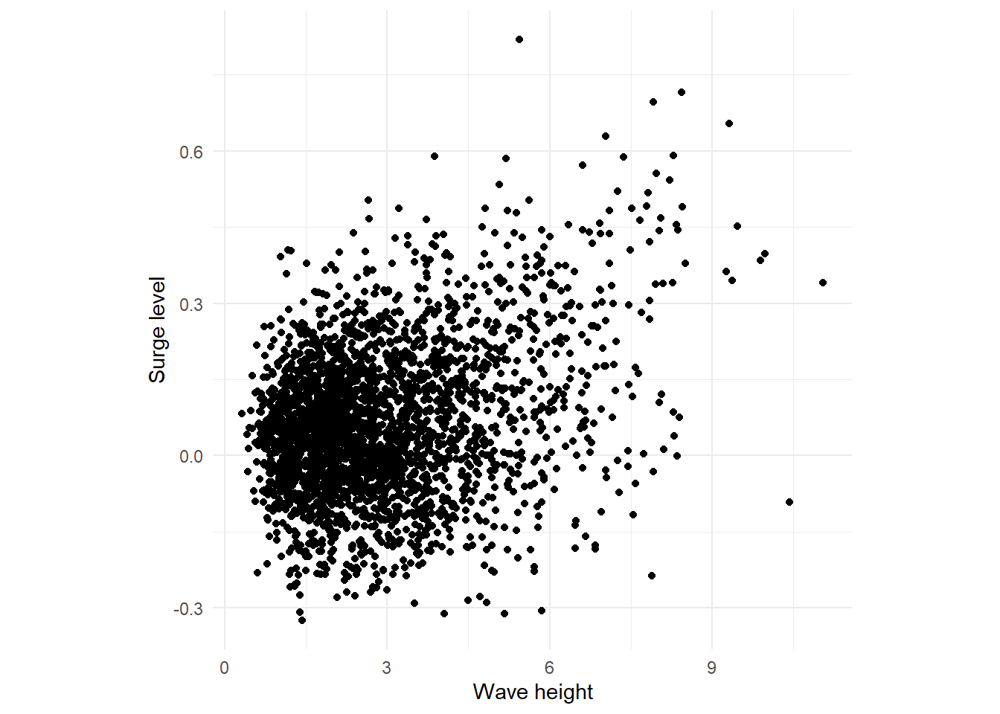
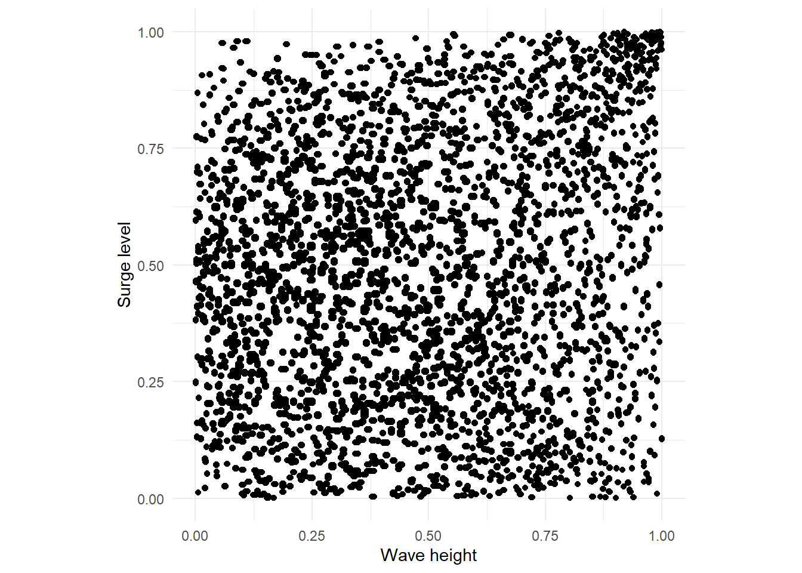
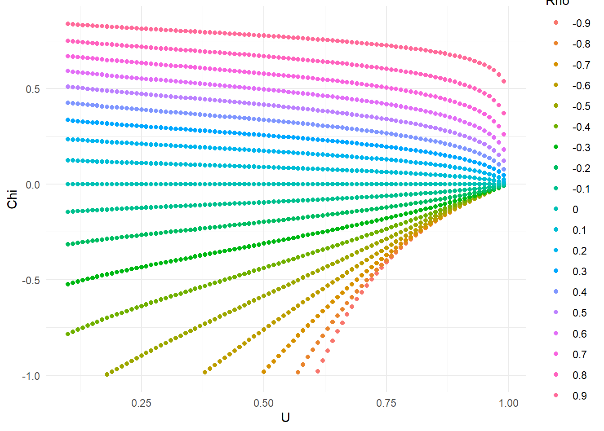
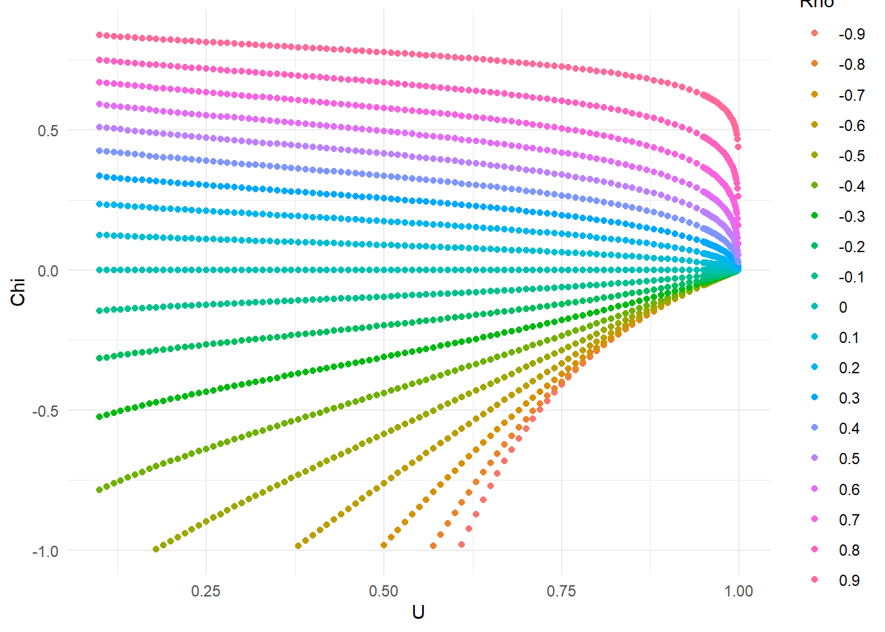

Extremal dependence paper
The aim is to recreate the analysis and plots from Dependence Measures for Extreme Value Analysis paper by Stuart Coles and Jonathan Tawn (1999).
There are \(3\) datasets in the paper. First, temperature data from Oxford and Worthing examines spatial dependence of extremely high temperatures. Second, precipitation data from Oxford to examine time dependence of precipitation. Third, dependence between surge levels and tides for extreme sea levels.
data(wavesurge)
# plot the wavesurge data
ggplot(wavesurge) + geom_point(aes(x=wave,y=surge))+ theme_minimal() + theme(aspect.ratio = 1) + xlab("Wave height") + ylab("Surge level")
Using the probability integral transform (PIT), plot the quantiles.
# create x and y quantile variables
U <- wavesurge %>% select(wave) %>% arrange(wave) %>% mutate(u=row_number()/(nrow(wavesurge)+1))
V <- wavesurge %>% select(surge) %>% arrange(surge) %>% mutate(v=row_number()/(nrow(wavesurge)+1))
# examine top and bottom
U %>% head() wave u
618 0.32 0.0003454231
614 0.41 0.0006908463
668 0.43 0.0010362694
616 0.44 0.0013816926
617 0.45 0.0017271157
30 0.48 0.0020725389U %>% tail() wave u
2708 9.37 0.9979275
398 9.47 0.9982729
399 9.89 0.9986183
2295 9.97 0.9989637
1479 10.43 0.9993092
2294 11.05 0.9996546V %>% head() surge v
258 -0.325 0.0003454231
2198 -0.312 0.0006908463
1482 -0.311 0.0010362694
1541 -0.308 0.0013816926
1481 -0.305 0.0017271157
2199 -0.291 0.0020725389V %>% tail() surge v
1471 0.591 0.9979275
868 0.629 0.9982729
1519 0.654 0.9986183
897 0.696 0.9989637
1520 0.716 0.9993092
2638 0.819 0.9996546df <- wavesurge %>% left_join(U,by="wave") %>% left_join(V,by="surge")Warning in left_join(., U, by = "wave"): Detected an unexpected many-to-many relationship between `x` and `y`.
ℹ Row 1 of `x` matches multiple rows in `y`.
ℹ Row 286 of `y` matches multiple rows in `x`.
ℹ If a many-to-many relationship is expected, set `relationship =
"many-to-many"` to silence this warning.Warning in left_join(., V, by = "surge"): Detected an unexpected many-to-many relationship between `x` and `y`.
ℹ Row 1 of `x` matches multiple rows in `y`.
ℹ Row 901 of `y` matches multiple rows in `x`.
ℹ If a many-to-many relationship is expected, set `relationship =
"many-to-many"` to silence this warning.df %>% head() wave surge u v
1 1.5 -0.009 0.1865285 0.3112263
2 1.5 -0.009 0.1865285 0.3115717
3 1.5 -0.009 0.1865285 0.3119171
4 1.5 -0.009 0.1865285 0.3122625
5 1.5 -0.009 0.1865285 0.3126079
6 1.5 -0.009 0.1865285 0.3129534Now plot the values on the \(U(0,1)\) scale to replicate (c) of Figure \(5\).
ggplot(df)+ geom_point(aes(x=u,y=v)) + theme(aspect.ratio = 1) + xlab("Wave height") + ylab("Surge level")
Dependence measures
Now, try to replicate Figure \(10\) to plot the dependence measures \(\chi(u)\) and \(\Bar{\chi(u)}\).We need to calculate the empirical estimate of \(C(u,u)\). Each marginal distribution is estimated by its empirical distribution function. The confidence intervals are constructed using the delta method.
To illustrate the problem of dependence measure \(\chi(u)\), we can plot the function for different values of correlation coefficient \(\rho\) in the Gaussian dependence model.
# for loop for diff values of rho
U <- c()
Chi <- c()
Rho <- c()
edge <- 10^(-6)
u <- seq(0+edge,1-edge,0.01)
rho_vec <- seq(-0.9,0.9,0.1)
for (i in 1:length(rho_vec)) {
rho <- rho_vec[i]
# calculate the copula using VGAM package
c_uu <- pbinormcop(q1=u,q2=u,rho=rho)
# calculate chi(u)
chi <- 2- (log(c_uu))/(log(u))
u <- u[chi>-10^6]
chi <- chi[chi>-10^6]
# subset by Frechet bounds (lower bound is sufficient)
lower_bound1 <- chi>(2-(log(2*u-1))/(log(u)))
lower_bound <- lower_bound1 %>% replace(is.na(.), TRUE)
# add items to a list
U <- append(U,u[lower_bound])
Chi <- append(Chi,chi[lower_bound])
Rho <- append(Rho,rep(rho_vec[i],sum(lower_bound)))
}Warning in log(2 * u - 1): NaNs produced
Warning in log(2 * u - 1): NaNs produced
Warning in log(2 * u - 1): NaNs produced
Warning in log(2 * u - 1): NaNs produced
Warning in log(2 * u - 1): NaNs produced
Warning in log(2 * u - 1): NaNs produced
Warning in log(2 * u - 1): NaNs produced
Warning in log(2 * u - 1): NaNs produced
Warning in log(2 * u - 1): NaNs produced
Warning in log(2 * u - 1): NaNs produced
Warning in log(2 * u - 1): NaNs produced
Warning in log(2 * u - 1): NaNs produced
Warning in log(2 * u - 1): NaNs produced
Warning in log(2 * u - 1): NaNs produced
Warning in log(2 * u - 1): NaNs produced
Warning in log(2 * u - 1): NaNs produced
Warning in log(2 * u - 1): NaNs produced
Warning in log(2 * u - 1): NaNs produced
Warning in log(2 * u - 1): NaNs produced#p <- p + geom_line(data=df,mapping = aes(x=u,y=chi))
df <- data.frame(U,Chi,Rho=as.factor(Rho))
# subset to remove \chi(u)<-1 to match Coles' paper
df <- df[Chi>=-1,]
# ggplot requires prepared data before plotting
ggplot(df) + geom_point(aes(x=U,y=Chi,color=Rho)) + xlab(TeX("$u$")) + ylab(TeX("$\\chi(u)$"))
Furthermore, plotting extra points close to \(1\) makes the convergence more obvious.
Warning in log(2 * u - 1): NaNs produced
Warning in log(2 * u - 1): NaNs produced
Warning in log(2 * u - 1): NaNs produced
Warning in log(2 * u - 1): NaNs produced
Warning in log(2 * u - 1): NaNs produced
Warning in log(2 * u - 1): NaNs produced
Warning in log(2 * u - 1): NaNs produced
Warning in log(2 * u - 1): NaNs produced
Warning in log(2 * u - 1): NaNs produced
Warning in log(2 * u - 1): NaNs produced
Warning in log(2 * u - 1): NaNs produced
Warning in log(2 * u - 1): NaNs produced
Warning in log(2 * u - 1): NaNs produced
Warning in log(2 * u - 1): NaNs produced
Warning in log(2 * u - 1): NaNs produced
Warning in log(2 * u - 1): NaNs produced
Warning in log(2 * u - 1): NaNs produced
Warning in log(2 * u - 1): NaNs produced
Warning in log(2 * u - 1): NaNs producedWarning in geom_line(aes(x = U, y = Chi, fill = Rho)): Ignoring unknown
aesthetics: fillWarning in geom_segment(aes(x = 0, y = 1, xend = 1, yend = 1), linetype = "dashed"): All aesthetics have length 1, but the data has 3260 rows.
ℹ Please consider using `annotate()` or provide this layer with data containing
a single row.
What happens if we do not restrict lower limit of \(y\)-axis to be \(-1\)? As there is no lower bound as \(u \rightarrow 0\) in the case of negative dependence, the illustration becomes harder to read.
Dependence measure \(\Bar{\chi}(u)\)
Theoretical part of the paper involves plotting the dependence measures \(\chi(u)\) and \(\Bar{\chi(u)}\).
# for loop for diff values of rho
U <- c()
Chi <- c()
Rho <- c()
edge <- 10^(-5)
rho_vec <- seq(0.9,-0.9,-0.1)
for (i in 1:length(rho_vec)) {
rho <- rho_vec[i]
u <- c(seq(0+edge,0.95,0.01),seq(0.95,(1-edge),length.out=50))
# calculate the copula using VGAM package
c_uu <- c()
#c_uu <- 1-2*u+ rvinecopulib::pbicop(u=matrix(c(u,u),ncol=2),family="gaussian",parameters=rho)
for (i in 1:length(u)) {
c_uu[i] <- mvtnorm::pmvnorm(lower=c(qnorm(u[i]),qnorm(u[i])),sigma=matrix(c(1,rho,rho,1),ncol=2))
if (i>2) {if (c_uu[i]<=0) {c_uu[i] <- c_uu[i-1]} }
}
# calculate chi(u)
# chi <- -1+ (2*log(1-u))/(7.9999^(-1)*log(c_uu^(7.9999)))
chi <- -1+ (2*log(1-u))/(log(c_uu))
#u <- u[chi>-10^6]
#chi <- chi[chi>-10^6]
# subset by Frechet bounds (lower bound is sufficient)
#lower_bound1 <- chi>(2-(log(2*u-1))/(log(u)))
#lower_bound <- lower_bound1 %>% replace(is.na(.), TRUE)
# add items to a list
U <- append(U,u)
Chi <- append(Chi,chi)
Rho <- append(Rho,rep(rho,length(u)))
}
# rho <- -0.9
# c_uu <- c()
# chi <- c()
# c_uu <- 1-2*u+pbinormcop(q1=u,q2=u,rho=rho)
# # calculate chi(u)
# for (j in 1:length(u)) {
# if (u[j]< 10^-10) {
# chi[j] <- -1+ (2*log(1-u))/(log(c_uu*(10^20))-20*log(10))
# }
# else {
# chi[j] <- -1+ (2*log(1-u))/log(c_uu)
# }
# }
# chi <- -1+ (2*log(1-u))/log(c_uu)
# plot(u,chi)
#p <- p + geom_line(data=df,mapping = aes(x=u,y=chi))
df <- data.frame(U,Chi,Rho=as.factor(Rho))
# subset to remove \chi(u)<-1 to match Coles' paper
df <- df[Chi>-1,]
#df$U[(df$U==1) &(df$Rho<0.6)] <- NA
# ggplot requires prepared data before plotting
p2 <- ggplot(df %>% drop_na()) + geom_line(aes(x=U,y=Chi,fill=Rho)) + xlab(TeX("$u$")) + ylab(TeX("$\\bar{\\chi}(u)$")) + ylim(c(-1,1)) + xlim(c(0,1)) + geom_segment(aes(x = 0, y = 1, xend = 1, yend = 1), linetype="dashed") + geom_segment(aes(x = 0, y = -1, xend = 1, yend = -1),linetype="dashed")Warning in geom_line(aes(x = U, y = Chi, fill = Rho)): Ignoring unknown
aesthetics: fillp2Warning in geom_segment(aes(x = 0, y = 1, xend = 1, yend = 1), linetype = "dashed"): All aesthetics have length 1, but the data has 2755 rows.
ℹ Please consider using `annotate()` or provide this layer with data containing
a single row.Warning in geom_segment(aes(x = 0, y = -1, xend = 1, yend = -1), linetype = "dashed"): All aesthetics have length 1, but the data has 2755 rows.
ℹ Please consider using `annotate()` or provide this layer with data containing
a single row.
#+ guides(colour = guide_legend(reverse=T))
#grid.arrange(p1,p2,ncol=2)